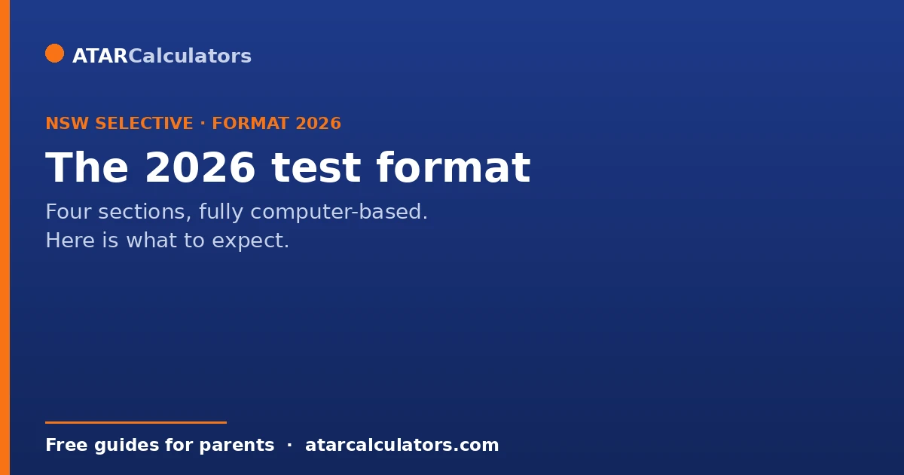
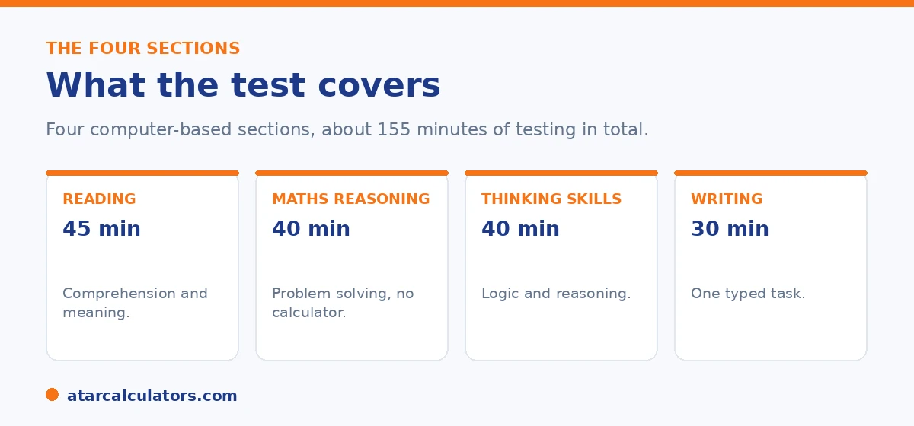

Here is the short version. The NSW Selective High School Placement Test is now fully computer-based, with four sections: Reading (45 minutes), Mathematical Reasoning (40 minutes, no calculator), Thinking Skills (40 minutes). And a typed Writing task (30 minutes). The four sections are widely reported to count equally, replacing an older scheme where Thinking Skills counted more. There are new question types, the test is sat at external centres. And an equity placement model affects offers.
If you are using old practice papers, stop. The selective test has changed enough that pre-2023 materials no longer match it well. Here is the current format.
Below are the sections, the timing, what is new, and what it means for preparation. To estimate a result, use our NSW selective calculator.
Key takeaways
- The test is now fully computer-based, sat at external centres.
- Four sections: Reading, Mathematical Reasoning, Thinking Skills, Writing.
- Timing is about 155 minutes of testing in total.
- Writing is a typed task, so keyboard fluency helps.
- The four sections are widely reported to count equally.
- An equity placement model affects who gets an offer.
The headline change: fully computer-based
The biggest shift is that the test is now fully computer-based. Students sit it at external test centres, usually local high schools, on computers the department provides. The test runs over more than one day, with several versions for fairness.

This matters for preparation. Reading is on screen. Working out is done on paper, but answers are typed in. The Writing task is typed too, so a child who cannot type comfortably loses time.
The four sections and timing
Here is the structure of the four sections.
| Section | Time | Format |
|---|---|---|
| Reading | 45 minutes | Multiple choice, mixed text types |
| Mathematical Reasoning | 40 minutes | Multiple choice, no calculator |
| Thinking Skills | 40 minutes | Multiple choice, logic and reasoning |
| Writing | 30 minutes | One typed response |
About 155 minutes of testing in total, all on a computer at a test centre.
Mathematical Reasoning allows no calculator, so mental maths and efficient working matter. Thinking Skills needs no prior knowledge, and is the section most students find unfamiliar.
What is new in the question types
Beyond going digital, some question styles have changed. Reading now includes a vocabulary cloze. Students pick words from dropdown menus to fill blanks in a passage. Thinking Skills has more abstract reasoning, with pattern grids, figure series, and spatial questions. The Writing task is longer than before.
This is why old practice papers fall short. Use up-to-date materials that match the current format, so test day holds no surprises.
Want to estimate a result from practice scores?
Try the NSW selective calculator →The weighting has changed
The way sections combine has also changed. In the current model, the four sections are widely reported to count equally, at one quarter each. This replaced an older scheme where Thinking Skills counted for more and Writing for less.
So Writing now matters more than it used to, and no single section can carry a result. Note that the Department does not publish the exact weightings, so treat precise figures as estimates. See our weighting guide for more.
Equity placements and offers
Offers are not decided by rank alone. An equity placement model keeps a share of places for students from disadvantaged backgrounds. Gender balance is also considered at some schools. This can affect who gets an offer.
The test is also held only in NSW. So interstate or overseas applicants must travel to sit it. For how offers and rankings work overall, see our guide to how entry works.
The equity model is worth understanding. This is because it explains why offers do not fall in a simple straight line down the rank order. Alongside places filled purely on test performance, a share is reserved through an equity placement scheme for students from disadvantaged backgrounds. So that a strong applicant who faced significant hardship is not shut out by circumstances beyond their control. Some schools also weigh gender balance. The practical effect is that the exact score needed for an offer can vary between applicants and cannot be reduced to one universal cut-off. That is part of why no official cut-off is published and why online figures are only estimates. For families, the useful takeaways are straightforward. If your child has faced genuine disadvantage, look into whether an equity consideration applies. This is because it exists precisely to give a fairer chance. For everyone, treat the process as competitive but not perfectly mechanical. Prepare well. Preference the schools you would genuinely attend in true order, so your one result is used to its fullest. And understand that the final outcome reflects the equity model and the strength of each year's pool, as well as raw rank. Read that way, the system is fairer than a single cut-off would suggest, and knowing how it works helps you plan realistically rather than chase a precise number that does not exist.
What test day looks like
The test is computer-based and sat at a test centre. The sections run with set timing, one after another, so your child needs to be comfortable working on screen and managing the clock.
So there are no papers to shuffle. Being at ease with a computer, and used to moving on when time is up, helps your child focus on the questions themselves.
Getting used to the computer format
The best way to settle nerves about the format is to use the official practice materials online. Working through them shows your child how questions appear on screen and how to navigate between them.
So build in some on-screen practice. Familiarity with the format lets your child spend their energy on thinking, not on working out how the test itself operates.
Managing the timing
Each section is timed on its own, so your child cannot borrow time from an easy section for a hard one. Managing the clock within each section is a skill in itself.
So practise pacing: attempt the questions your child can do, and move on rather than getting stuck. Leaving nothing blank, and not over-spending on one hard question, protects the score.
Common questions
What has changed in the 2026 selective test?
It is now fully computer-based, sat at external centres on department computers. There are new question types, the Writing task is longer and typed. And the four sections are widely reported to count equally, replacing an older uneven scheme.
What are the current test components?
Four sections: Reading (45 minutes), Mathematical Reasoning (40 minutes, no calculator), Thinking Skills (40 minutes). And a typed Writing task (30 minutes), for about 155 minutes of testing.
Is the selective test computer-based?
Yes. It is now fully computer-based, sat at external test centres on department-provided computers, with answers entered digitally and the Writing task typed.
Are there reserved equity places?
Yes. An equity placement model reserves a share of places for students from disadvantaged backgrounds, and gender balance is considered at some schools. These can affect offers.
Has the weighting changed?
In the current model the four sections are widely reported to count equally, replacing an older scheme where Thinking Skills counted more and Writing less. The Department does not publish exact weightings.
Can you sit the test interstate or overseas?
From 2026 the test is held only in NSW, so interstate or overseas applicants who are eligible must travel to NSW to sit it.
Estimate a selective result
Enter practice section results for a rough competitiveness guide. Free, and no signup.
Open the NSW selective calculator →Related guides
This guide is general information for parents, not formal advice. The NSW Department of Education sets the rules, and details like dates, weightings and the equity model can change. It does not publish section weightings, the score total, or school cut-off scores. So always confirm current details on the official NSW selective high schools pages. Reviewed by the ATARCalculators Editorial Team.